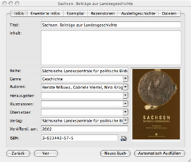

Der Reiter „Infos”
Das Informationsfenster besteht aus sechs Reitern. Um das Informationsfenster
aufzurufen, klicken Sie doppelt auf den jeweiligen Bucheintrag oder klicken
Sie das Symbol „Infos einblenden”, welches sich in der Symbolleiste befindet,
an. Grundinformationen können über den Reiter „Infos” geändert werden.

Verfügbare Einträge
- Titel
- Inhalt
- Reihe
- Genre
- Autoren
- Herausgeber
- Illustratoren
- Übersetzer
- Verlag
- Veröffentl. am - Abkürzung für „Veröffentlicht am”
- ISBN - Abkürzung für „International Standard Book Number”
Strichcode-Erkennung
Wenn Sie die kleine Kamera neben dem ISBN-Eingabefeld anklicken, öffnet sich das Kamerafenster. Wenn die angeschlossene Kamera bereits eingeschaltet ist, wird Ihnen das aktulle Bild der Kamera angezeigt. Auf diesem Bild erkennen Sie einen roten Balken. Dieser Balken dient zur korrekten Ausrichtung des Strichcodes. Halten Sie das Buch vor die Kamera, so daß der Strichcode und der Balken eine gerade Linie bilden. Wurde der Strichcode erkannt, leuchtet der Balken kurz grün auf und das Kamerafenster wird automatisch geschlossen. Innerhalb des ISBN-Eingabefeldes wird nun eine Nummer angezeigt.
Wenn Sie eine eingebaute iSight-Kamera benutzen, so wird die iSight-Kamera automatisch beim Öffnen des Fensters eingeschaltet. Dieser Prozeß kann je nach Geschwindigkeit Ihres Rechners einen kurzen Moment dauern.
Automatisches Ausfüllen
Bei dem Hinzufügen eines neuen Buches haben Sie die Möglichkeit, weitere Informationen durch eine andere Quelle zu erhalten. Geben Sie so viele Daten wie Sie mögen ein - am Besten die ISBN des Buches - und klicken Sie anschließend auf den Knopf «Automatisch ausfüllen». Durch die ISBN wird ein Buch eher gefunden, als durch die einfach Angabe des Titels. Es ist aber genauso möglich, andere Daten für das «Automatische Ausfüllen» anzubieten. Es kommt dadurch aber häufiger vor, daß entweder das das Buch oder nicht das richtige Buch gefunden werden konnte. Geben Sie also möglichst viele Daten an, insofern Sie nicht über die ISBN suchen möchten. Wenn die im Einstellungsfenster standardmäßig festgelegte Erweiterung das gesuchte Buch nicht gefunden hat oder Sie eine andere Quelle für diesen Eintrag nutzen möchten, können Sie in einem Auswahlfenster die entsprechende Quelle für das «Automatische ausfüllen» angeben.